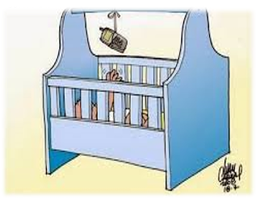
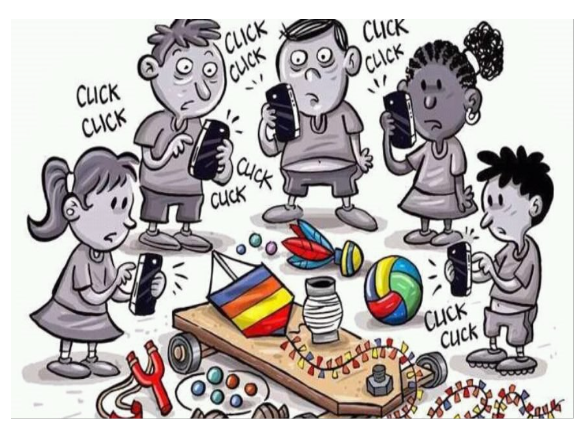

Formação em rede
Celulares nas escolas: normativas,
uso pedagógico e desafios

04/60
O Uso Inadequado e Precoce

- No Brasil: 61% dos bebês e crianças até três anos de idade têm acesso a celulares e 12% têm aparelhos só deles. Além disso, 95% das crianças entre 10 e 12 anos de idade têm algum tipo de acesso ao celular.
Distração Passiva
- Crianças cada vez mais novas têm acesso a celulares e computadores usados pelos adultos, seja em casa, escolas, creches (CEIs) ou outros lugares, como restaurantes e ônibus, geralmente para mantê-las quietas.
- Esse uso, conhecido como distração passiva, é impulsionado pelo consumismo de jogos e vídeos promovidos pela indústria do entretenimento, mas, contrasta com o brincar ativo, que é um direito essencial para o desenvolvimento saudável de crianças e adolescentes.
